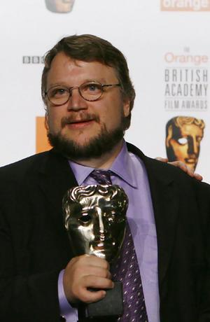
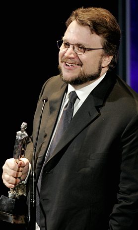
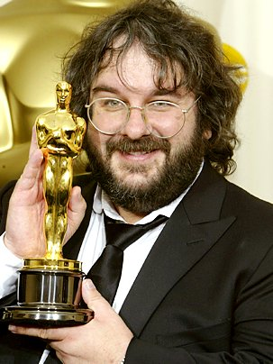

Galardones

El 2006 fue premiado por su película "el laberinto del fauno" en los premios Goya como mejor
guion original y mejor fotografía, también fue candidato a mejor director y mejor película.
También triunfo en los premios BAFT por mejor película no inglesa y mejor guionista. Recibió
galardones en los premios óscar por mejor película extranjera y fue candidato a mejor guionista.